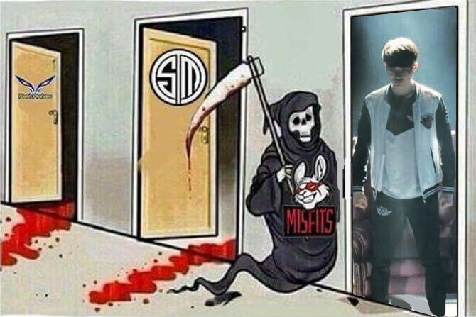

LEAGUE OF LEGENDS
- HOME
- CHAMPIONS
- NEWS
- SIGN UP
- LOG IN
LEAGUE OF LEGENDS
– Hôm nay Misfits sẽ thua thôi
– Đừng có đánh giá thấp bọn họ như vậy. Họ đã đưa TSM với FW về nhà đó.
– Alphari thi đấu rất tốt nhưng cậu ta toàn mắc sai lầm. Kiểu gì cũng đi đường tốt xong lên ba đồ sát thương cho Camille rồi bị hạ gục trong giao tranh tổng, cuối cùng là quăng game. Cậu ta sẽ là một tuyển thủ rất tuyệt vời nếu mà không quăng game.
– Ai cũng nghĩ rằng Alphari giỏi cả.
– Cậu ta giỏi thật mà. Nhưng toàn mắc sai lầm vào lúc quan trọng.
– Sejuani, Galio với Trundle hả =))!
– Ba con heo kìa? Cái gì thế này?
– Hết thở nổi rồi.
– Nhìn tuyến trên kìa….Họ có vượt qua nổi không đây?.
– Wolf ra quyết định tốt quá. Cậu ta đi rượt Shen luôn.
– Họ đã quay một video Mukbang (video về ăn uống, Tahm Kench toàn ăn tướng địch) tuyệt vời
– Wolf ăn nhiều quá nên phải đi Toilet rồi.
– Nhưng mà nói thật, MSF đánh tốt quá. Không phải chỉ một con bài dị. Trong meta Lư Hương Sôi Sục như hiện tại mà họ thắng trận với chính phong cách của riêng mình. Mặc dù thua nhưng MSF thi đấu rất tốt. Nếu mà họ được chia vào cặp khác thì chắc là họ tới Bán Kết rồi.
– MSF đã đánh rất tốt. Cực kỳ tốt.
– Các ông đang nói rằng MSF đáng ra nên gặp may hơn trong việc chia cặp. Nhưng mà họ may thật còn gì. Nếu gặp WE kiểu gì cũng ăn hành xong sẽ thua trước cả RNG luôn mà xem. Có lẽ MSF đánh tốt như thế này là vì gặp SKT thôi.
– Họ đã thua nhưng họ thi đấu rất tốt.
– Pha trừng phạt đó đúng là quyết định cả trận. Nếu mà MSF ăn được rồng ngàn tuổi thì họ đã thắng rồi.
– Cũng sẽ vậy thôi. Jayce sẽ móc lốp và đưa Syndra lên bảng.
– Vì ba rồng lửa rất là mạnh lúc có rồng ngàn tuổi nên là chưa chắc họ sẽ thua đâu.
– Có phải mỗi mình tôi kêu ré lên như con gái lúc họ cướp rồng thành công không?
– Tôi gào rát họng luôn nè.

– Tôi vừa cầm quần quăng quăng vừa gào thét.
– Tôi đã gào thét sau khi nhà chính bị phá. Trước đó thì cạn lời luôn.
– Một siêu sao thực sự sẽ tỏa sáng khi cả đội ăn hành. Liệu có ai làm được như Faker không? Vượt quả cả việc trở thành người đi đường giữa giỏi nhất rồi. Cậu ta chính là LMHT.
– Blank cũng thế. Việc ra quyết định của Wolf cũng rất tốt. Huni bị bắt vài lần nhưng mà pha Dịch Chuyển móc lốp đó tuyệt vời vãi. Faker thì làm tôi cạn lời luôn. Cậu ta đúng là một vị thần. Kể cả MSF thua hôm nay thì họ vẫn rất tuyệt vời. Nếu mà không phải Faker thì MSF sẽ thắng rồi. Từ ván hai trở đi, MSF đã cố hết sức mình. Cả hai đội đều đã thi đấu tốt. Hay lắm mấy ông ơi!
– Tạm biệt Shen Thỏ Ngọc, Senjuani Thỏ Ngọc, Karma Thỏ Ngọc, Tristana Thỏ Ngọc và Leona Thỏ Ngọc :(. Đen đủi quá điiii :((